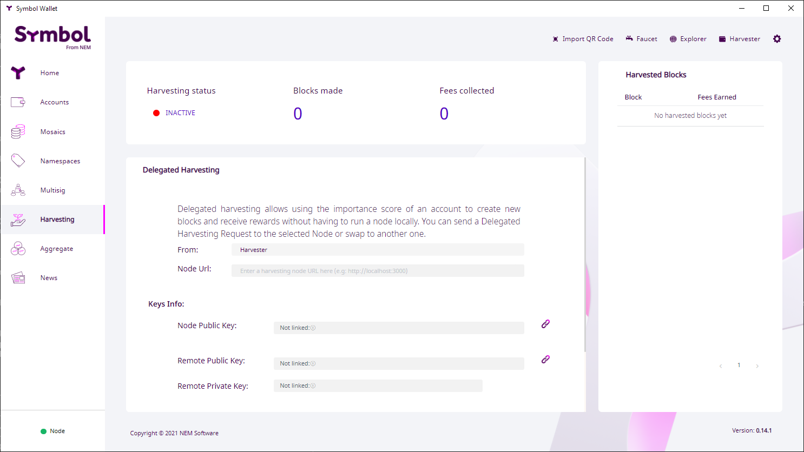
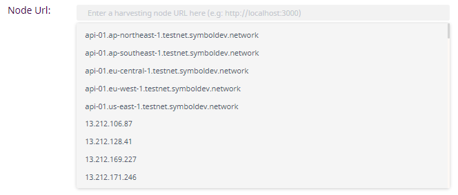
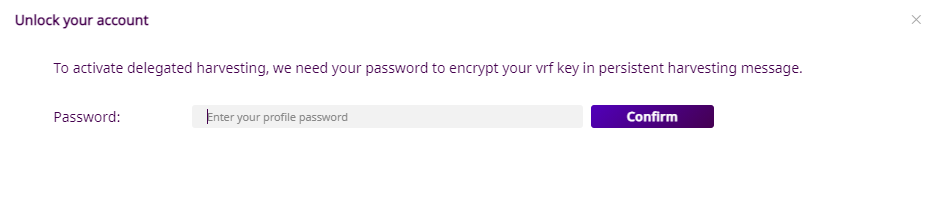
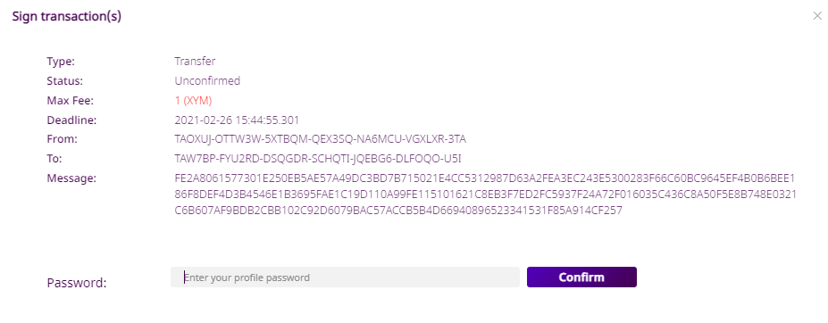
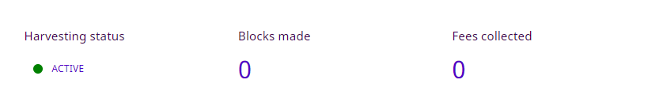

あなたのアカウントのインポータンスを安全にノードと共有して報酬を得ます。
Delegated harvesting enables accounts to receive rewards from creating new blocks without running a node. At the same time, it allows nodes to benefit from such an account's (possibly higher) importance score.
This guide is therefore addressed at users not running a Symbol node. Node owners have access to the node's configuration so it's more convenient for them to use Remote harvesting instead of delegating.
このガイドの手動バージョン が説明しているように、デリゲートハーベスティングを有効にするために必要なステップがいくつかあり、さまざまなアカウントといくつかのトランザクションを必要とします。したがって、このガイドに示されているように Symbol の デスクトップウォレット を使用する方が はるかに便利 です。
このプロセスでは 目的のノードを選択 して ハーベスティングリクエストを送信 するだけで済みます。
デスクトップウォレットでデリゲートハーベスティングを有効にするには、次のアイテムが必要です:
デスクトップウォレット をアップデートしてください。最新版は リリースページ からダウンロードできます。
ハーベスト手数料を受け取る アカウント 。次を満たします:
適格 となるためには、最低でも 10,000 symbol.xym 以上と支払うトランザクション手数料が必要です。
インポ―タンススコア が 0 より大きい。このスコアは 12 時間ごとに計算されることに注意してください。
注釈
Activating Delegated harvesting requires sending transactions and paying the required transaction fees.
You can enable, disable and switch nodes multiple times, but be warned that each action will incur in a (small) transaction fee.
左側のメニューでハーベスティングオプションを選択します 。ハーベスティング画面が表示されます:
Note that the Harvesting status is 🔴 INACTIVE.
ノード URL ボックス をクリックして、現在ネットワークに接続されているノードのリストを表示します:
注釈
Peer と API の 両方 として機能するノードだけがリストに表示されますが、入力欄に 手動でURL を入れることで、Peer ノードからのハーベスティングをリクエストできます。この場合、ノードの トランスポート公開鍵 も提供する必要があります。
このキーはノード所有者が提供する必要があります 。 Symbol Bootstrap を使用してノードをインスタンス化した場合、このキーは addresses.yml ファイルにあります。
ただし、非 API ノードにハーベスティングをデリゲートする場合は ハーベスティングステータス インジケーターが機能しないことに注意してください。
Select a node from the list and click on the "Link all keys" button.
アグリゲートトランザクション への署名を求められます:

このアグリゲートトランザクションはハーベスティングに必要な 3 種類のキー をアカウントに登録します。
パスワードを入力して "Confirm" をクリックします。
デスクトップウォレットは トランザクションに署名 を行い ネットワークにアナウンス します。しばらく (30 秒以上かかることはありません) すると画面が更新されます。

You can see that the Harvesting status has changed to 🟡 KEYS LINKED and the different keys appear in the form.
あとは実際のリクエストである Persistent Delegation Request Transaction をノードへ送信することだけです。
"有効化" ボタンをクリック
ノードに送信する永続的デリゲートメッセージを暗号化するには、パスワードが再度必要になります。
パスワードを入力して "Confirm" をクリックします。
永続的デリゲートリクエスト (特別なタイプの 転送 トランザクション) に署名してアナウンスするには、最後にもう一度パスワードが必要です。
パスワードを入力して "確認" をクリックする (もう一度)
Once you receive the confirmation message (shouldn't take longer than 30 seconds), the Harvesting status should change to 🟡 ACTIVATION IN PROGRESS:

At this point it is up to the node to accept the request and add your account as a harvester. When this happens, the Harvesting status will change to 🟢 ACTIVE:
デリゲートハーベスティングが有効になり、ノードの インポータンススコア に比例した割合で、手数料の徴収を開始します。 (注意事項について、以下の さいごに セクションを参照してください)
注釈
ノードを構成するのではなく Persistent Delegation Request Transaction を介して委任をリクエストする場合、ノードがデリゲートハーベスティングを有効にしているかどうかは、 ネットワークではなく ノードに依存しています。要求に応じるか、その状態について嘘をつき、誤解を招く ハーベスティングステータス インジケータを提供するかは、完全にノード次第です。
したがって、アカウントがハーベスターになったかどうかを知るための 信頼性のある 方法は、アカウントがハーベスト手数料を受け取り始めるのを待つ以外にはありません。
このプロセスの詳細については このガイドの手動版 を参照してください。
ハーベスティングステータス インジケータはアカウントのデリゲートハーベスティングの状態を確認するのに役立ちます。
ステータス |
意味 |
|---|---|
🔴 無効 |
Some keys are missing. Go to step 2. |
🟡 キーのリンク済み |
Keys are present but the harvesting delegation request has not been sent. Go to step 5. |
🟡 進行中 |
ハーベスティングデリゲートリクエストは送信されましたが、ノードはまだそれを確認していません。数分かかる場合もあれば、決して起こらない場合もあります。この時点でできることは、別のノードを試す以外にありません。 |
🟢 有効 |
ハーベスティングは有効です。あなたのアカウントのインポータンスに依存した、ハーベスト済みブロックとそれらの手数料を受け取り始めます。 |
🔴 FAILED |
Activation did not succeed or could not be verified. Wait a bit or select a different node in step 2. See the note below for more details. |
インポータンスの高いアカウントは、ハーベスティングを実行するためにより頻繁に選択されます。デリゲートハーベスタとして、正常にノードに登録している場合でも、 インポータンススコア が十分に高くない限りは、ブロックをハーベスティングすることはありません。 (報酬も受け取りません)
インポータンススコアの計算は継続的に行われません。デフォルトでは、アカウントインポータンススコアは、1440 ブロックごと (約 12 時間ごと) に再計算されます。 ネットワークプロパティの設定 ガイドの importanceGrouping プロパティを参照してください。
最後に、上記で説明したように Harvesting Delegation リクエストをアナウンスしても、デリゲートハーベスタとして追加されるとは限りません。ノードは自由に要求に応じたり、そのステータスについて嘘をつく場合があります。
 Last updated by
Last updated by {kind=link}
{kind=link}
{kind=link}
{kind=link}
{kind=link}